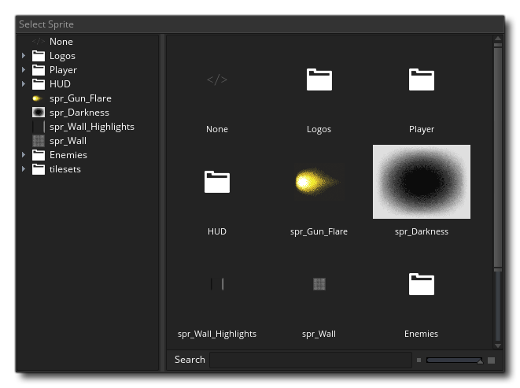
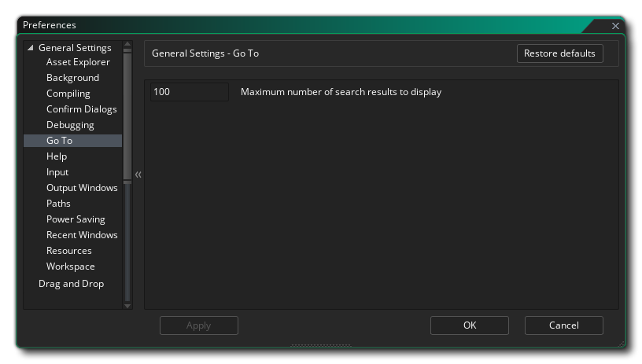
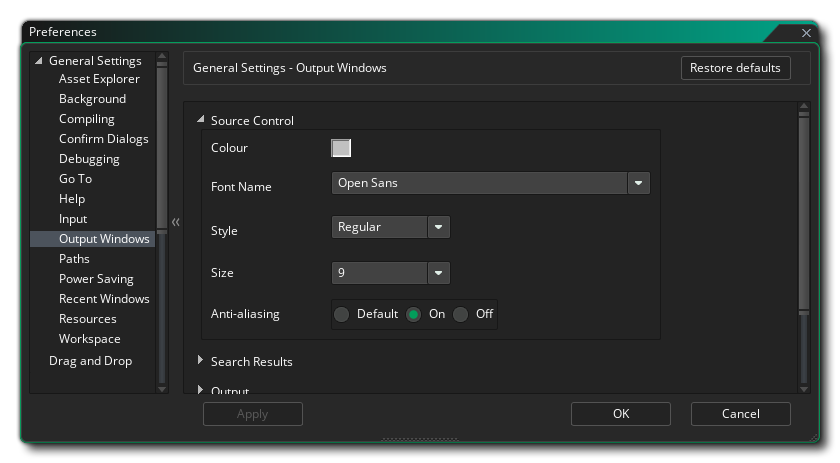

Les préférences générales permettent de définir le comportement général de l' GameMaker Studio 2. Les plus générales sont énumérées sur la page principale, tandis que beaucoup d'autres sont divisées en plusieurs sous-catégories, expliquées plus bas dans cette page.
- Langue IDE: Cette option vous permet de sélectionner la langue de l'EDI dans la liste des options fournies. La langue par défaut est l'anglais.
- Peau IDE: Ici, vous pouvez choisir parmi les différentes peaux que l'EDI peut utiliser. Par défaut, GameMaker Studio 2 est fourni avec deux GameMaker Studio 2, une claire et une sombre, et la configuration initiale utilise la peau sombre.
- Périphérique audio par défaut: vous pouvez choisir ici le périphérique audio par défaut à utiliser par l' GameMaker Studio 2. Vous pouvez actualiser la liste en cliquant sur le bouton Actualiser.
- Réponse automatique à la confirmation de sortie: cette option vous permet de définir si un message de confirmation doit être affiché lorsque vous quittez GameMaker Studio 2. Par défaut, cette option est définie sur "OK", mais peut être configurée pour ignorer le message comme si vous aviez cliqué sur OK.
- Activer les notifications: Cochez cette case pour permettre à l'EDI d'afficher des notifications sur les nouvelles exécutions, etc. C'est activé par défaut.
- Délai de notification (ms): définit la durée d'affichage (en millisecondes) d'une notification. La valeur par défaut est 6000.
- Déconnexion à la sortie: Si cette option est cochée, l'EDI déconnectera automatiquement la session de l'utilisateur à la fermeture de GameMaker Studio 2. Ceci est principalement destiné aux utilisateurs de l'éducation, car - une fois coché -, cela signifie que chaque fois que le programme s'arrête, l'utilisateur est déconnecté et libère ainsi le siège de la session pour que d'autres utilisateurs puissent l'utiliser. Ceci est désactivé par défaut.
- Recharger automatiquement les fichiers modifiés: Si cette case est cochée, l'EDI analysera et vérifiera automatiquement les fichiers pour voir s'ils ont été modifiés en dehors de GameMaker Studio 2 et les rechargera s'ils l'ont déjà été.
- Ouvrir de nouvelles ressources pour les modifier lors de la création: si cette case est cochée, chaque fois que vous créez une nouvelle ressource dans l’arborescence des ressources, l’éditeur de ressources correspondant s’ouvre automatiquement. Cette option est cochée par défaut. Si vous décochez cette option, vous devrez ouvrir manuellement toutes les ressources nouvellement créées.
- Ouvrir de nouvelles ressources à modifier en faisant glisser des fichiers dans l'EDI: certaines ressources (comme des GameMaker Studio 2 - GameMaker Studio 2 ou des sons) peuvent être glissées sur l'espace de travail principal dans l' GameMaker Studio 2 et seront détectées et ajoutées comme nouvelle ressource dans l'arborescence des ressources. Par défaut, l'éditeur de ressources correspondant est également ouvert pour édition lorsque cela se produit, mais décocher cette option empêchera les éditeurs de s'ouvrir et vous devrez les ouvrir manuellement.
- Autoriser la fermeture des onglets vides via un raccourci: vous pouvez fermer les onglets ouverts à l’aide du raccourci clavier.
 /
/  + W, mais si vous désactivez cette option, ce raccourci ne fonctionnera plus. C'est activé par défault.
+ W, mais si vous désactivez cette option, ce raccourci ne fonctionnera plus. C'est activé par défault. - Désactiver les animations de transition IDE: l' GameMaker Studio 2 propose un certain nombre de transitions animées, telles que l'ouverture de fenêtres, etc., mais elles ne sont pas du goût de tout le monde et vous pouvez constater une amélioration des performances si elles sont désactivées sur des machines plus anciennes ou trop peu puissantes si elles sont désactivées. sont désactivés. Vous pouvez les désactiver ici, et ils sont activés par défaut.
- Afficher l'écran de bienvenue au démarrage: cette option est GameMaker Studio 2 par défaut et indique simplement à GameMaker Studio 2 d'afficher un bref écran de démarrage lorsque vous démarrez le programme. Si vous décochez cette option, l'écran de démarrage ne sera pas affiché.
- Activer le remplacement DPI: Cette option vous permet de remplacer le paramètre DPI par défaut par le vôtre. Vous devez d’abord activer l’option, puis définir la valeur Raw DPi Override (la valeur par défaut est 96) ou le pourcentage de la DPi native. Une fois modifié, vous serez invité à redémarrer l’EDI. Vous devrez peut-être sauvegarder travaux en cours sur le projet actuellement ouvert.
- Opt-in pour les sondages de rétroaction: Lorsque cette option est cochée, vous dites GameMaker Studio 2 que vous souhaitez participer à des sondages de rétroaction, ce qui signifie que occaisionally tout en travaillant un message sera affiché sur la région que vous travaillez et demandez une note et retour d'information. Cette option est activée par défaut.
Les options ci-dessus sont les principales options disponibles dans les préférences générales, mais plusieurs options supplémentaires sont disponibles dans les sous-catégories répertoriées ci-dessous:
Lorsque vous allez ajouter une image-objet à un objet ou lorsque vous souhaitez utiliser une police dans le glisser-déposer ou dans un certain nombre de situations, Asset Explorer vous est présenté: 
Par défaut, il affiche une vue arborescente (à gauche) et une vue liste (à droite), mais en utilisant cette préférence, vous pouvez choisir de n’afficher que l’une ou l’autre.
Les préférences d’arrière-plan traitent de l’arrière-plan de Workspace, de son affichage et de son affichage. Les options sont:
- Image d'arrière-plan: Il s'agit du fichier image qui sera utilisé comme arrière-plan pour les différents espaces de travail. Une image par défaut est fournie et elle est activée par défaut, mais vous pouvez sélectionner votre propre image ici. Les types d'images que vous pouvez sélectionner sont *.png, *.gif, *.jpg, *.jpeg, *.tif, *.tiff, *.ico, *.bmp, *.2bp ou *.mdi, mais notez que, quel que soit le format d’image initial, tous les fichiers seront sauvegardés pour une utilisation en tant que *.png des fichiers tellement animés *.gif Les fichiers, par exemple, ne seront rendus que sous la forme d'une seule image initiale.
- Mise à l'échelle de l'image: Ceci contrôle la manière dont l'image d'arrière-plan sera mise à l'échelle dans les différents espaces de travail. Les choix sont:
- Étirer - L'image sera étirée pour s'adapter à l'espace de travail, en changeant d'échelle en fonction des docks visibles
- Mosaïque - L'image sera mosaïquée pour couvrir l'espace de travail
- Meilleur ajustement - L’image sera redimensionnée pour s’adapter proportionnellement à l’espace de travail, des barres étant ajoutées autour du bord si ce n’est pas un ajustement de 1: 1.
- Extension du bureau - L'arrière-plan couvre tout l'espace de travail et se déplace plutôt que de changer d'échelle lorsque les docks sont ouverts / fermés
- Extension de l'écran - L'arrière-plan couvrira une zone de la taille de la fenêtre et sera recadré / étendu pour afficher plus ou moins l'image au fur et à mesure que les docks sont ouverts / fermés.
- Afficher les images d'arrière-plan sur les espaces de travail: cette option détermine si l'image d'arrière-plan sélectionnée doit être affichée ou non. Par défaut, cette option est cochée.
Les préférences de compilation traitent de certaines options liées à la sortie lors de la compilation de votre jeu pour tester ou créer un package, ainsi que de certaines zones du processus de compilation. Les options sont:
- Ouvrir automatiquement la fenêtre d'erreur de syntaxe lors de la détection: activez ou désactivez la notification d'erreur de syntaxe lors de la compilation. Ceci est désactivé par défaut.
- Afficher la fenêtre de compilation lors de la compilation: Par défaut, la fenêtre de compilation sera affichée lors de la compilation de vos projets, même si le document de compilation est fermé (il s’ouvrira pour la compilation). Décocher cette case désactive ce comportement et la fenêtre de compilation sera visible si elle est ouverte.
- Afficher les commandes du compilateur dans la sortie de la compilation: Ceci est coché par défaut et oblige le compilateur à afficher toutes les commandes pertinentes dans la fenêtre de compilation. Si vous décochez cette option, la sortie sera plus petite et contiendra moins d'informations.
- Afficher la sortie détaillée du compilateur: cocher cette case oblige le compilateur à afficher des commandes supplémentaires liées au processus de compilation. En général, cela n’est requis que lors du débogage et peut être demandé au support si vous avez un problème. Il est désactivé par défaut (il s'agit du paramètre recommandé).
- Afficher le package dans l'explorateur à la fin de la construction: GameMaker Studio 2 cette GameMaker Studio 2 que GameMaker Studio 2 ouvre la fenêtre de l'explorateur de système d'exploitation à l'emplacement où le package exécutable final a été créé. Il est activé par défaut.
- Effacer la fenêtre de sortie au début de la compilation: par défaut, la fenêtre du compilateur efface tous les messages précédents de la fenêtre de sortie de la compilation au début de chaque construction, mais cette vérification conservera les journaux précédents du compilateur. Cette option est activée par défaut et constitue la configuration recommandée, car les journaux de compilation volumineux peuvent ralentir les temps de compilation.
- Port du débogueur: Ceci définit le numéro de port que le module de débogage doit utiliser. La valeur par défaut est 6509.
- Nombre maximal de travaux de compilation en parallèle: cette valeur définit le nombre maximal de cœurs de processeur à dédier pour la compilation d'un projet. La valeur par défaut est 8 et en général, vous ne devriez pas avoir à changer cela, mais si vous êtes sur un ordinateur portable ou sur un ordinateur bas de gamme, vous souhaiterez peut-être réduire cette valeur. La valeur par défaut est 8.
Les préférences de dialogue de confirmation concernent certaines des fenêtres contextuelles de confirmation générales qui apparaîtront lors de l'exécution de certaines actions dans l' GameMaker Studio 2. Les options sont:
- Réponse automatique à la fermeture d'un espace de travail via un raccourci clavier: Le raccourci clavier mentionné ci-dessus peut être utilisé pour fermer tout onglet ouvert, mais vous pouvez parfois fermer accidentellement un onglet vide dont vous avez besoin. Pour éviter cela, vous pouvez définir cette option sur "Afficher le message" (option par défaut) pour vous demander si vous souhaitez réellement fermer cet onglet vide. Les autres paramètres sont "Non", pour ne rien faire si le raccourci est utilisé, ou "OK" pour fermer l'onglet sans message.
- Réponse automatique au redémarrage d'une version en cours d'exécution: Lorsque vous redémarrez une version et que la précédente est toujours en cours d'exécution, il vous sera demandé si vous souhaitez arrêter la version actuelle en premier. Une vérification de ce message supprimera ce message et forcera GameMaker Studio 2 à supposer que vous avez cliqué sur "OK" en réponse. Cette option est définie sur "Afficher le message" par défaut.
- Réponse automatique à un avertissement lors d’une tentative de débogage YYC: La cible YYC est compilée en code natif et ne peut donc pas être déboguée à l’aide du débogueur intégré. Lorsque vous essayez d'utiliser le débogueur sur la cible YYC, vous recevez un avertissement vous informant de cela et du fait que le projet sera compilé à l'aide de la machine virtuelle. Cette option est définie sur "Afficher le message" par défaut, mais la définir sur "OK" supprimera cet avertissement.
- Réponse automatique à la réinitialisation de la structure du projet: Lorsque vous choisissez de réinitialiser la structure du projet (à partir du menu Layouts ), un message d'avertissement s'affiche par défaut pour vous indiquer comment cela fermera les fenêtres de ressources ouvertes. Cependant, vous pouvez supprimer ce message et réinitialiser automatiquement la mise en page en sélectionnant "OK", ou ne rien faire en sélectionnant "Non". La valeur par défaut est "Afficher le message".
- Réponse automatique à la désactivation des statistiques anonymes: Lorsque vous désactivez les statistiques de jeu anonymes dans les options de jeu général, un message d’avertissement vous invitant à examiner l’option attentivement sera affiché. Vous pouvez supprimer ce message en sélectionnant «OK» ici ou ne rien faire en sélectionnant «Non». La valeur par défaut est "Afficher le message".
Les préférences ici sont liées au GameMaker Studio 2 et vous avez les options suivantes:
- Réponse automatique à la fermeture du débogueur: Cette option vous permet de définir la réponse automatique à la fermeture du débogueur. Si cette option est définie sur "Afficher le message", la boîte de dialogue qui s’affiche lorsque vous souhaitez fermer le débogueur s’affiche. Le réglage sur "Oui" ou "Non" n’affiche pas cette boîte de dialogue et n’exécute pas la tâche indiquée.
- Activer le débogage en temps réel: cocher cette option vous permettra de déboguer vos projets de jeu en temps réel lorsque vous les exécutez à partir de l'EDI. Ceci est vérifié par défaut.
Les préférences ici concernent la fenêtre Aller à, que vous pouvez ouvrir à l’aide du raccourci clavier.
- Nombre maximal de résultats de recherche à afficher: Cette option contrôle le nombre maximal de résultats renvoyés lorsque vous utilisez la fenêtre de recherche Aller à.
Le fichier d'aide est conçu pour fonctionner comme une page Web et nécessite donc l'utilisation du micro-serveur Web GameMaker Studio 2 ou l'utilisation d'un navigateur externe. Ces paramètres peuvent être modifiés ici:
- Help manual port: définit le numéro de port du serveur micro Web manuel à utiliser. La valeur par défaut est 51291.
- Utiliser un navigateur externe pour obtenir de l'aide: Si cette case est cochée, l'ouverture du fichier d'aide l'ouvrira à l'aide du navigateur par défaut de votre système. Cette option est activée par défaut et sa désactivation forcera le fichier d'aide à s'ouvrir dans l'espace de travail de l'EDI.
Les préférences d'entrée contrôlent certains aspects de la souris et du clavier dans l'EDI. Les options disponibles sont:
- Temps de double clic lent (ms): certaines zones de l'EDI nécessitent un double-clic plus lent pour fonctionner correctement, par exemple lors du changement de nom d'une ressource (un double-clic rapide ouvre l'éditeur de ressources, tandis qu'un double-clic lent vous permet de le renommer. ). Cette option vous permet de définir la vitesse de détection, avec une valeur par défaut de 500 ms.
- Durée de verrouillage du défilement (ms): cette option traite du temps d’ GameMaker Studio 2 entre les fenêtres de défilement qui se chevauchent. Essentiellement, lorsque vous faites défiler la fenêtre "A", le curseur peut survoler une autre zone défilable de la fenêtre "B". Cette préférence définit donc le temps d'attente avant d'arrêter le défilement "A" avant de pouvoir faire défiler " B ", afin que vous ne commenciez pas accidentellement à faire défiler les différents panneaux. La valeur par défaut est 500ms.
- Vitesse de défilement: contrôle la vitesse de défilement dans les différents espaces de travail. La valeur par défaut est 1.
- Distance de glissement des onglets pour dé-agrandir le bureau (px): Lorsque vous faites glisser un onglet d’espace de travail de son GameMaker Studio 2 par défaut dans l’EDI, s’il n’ya qu’un seul espace de travail actif à ce moment-là, la fenêtre GameMaker Studio 2 -maximisera et se déplacera avec la souris (si vous avez plusieurs espaces de travail actifs, une nouvelle instance de l'EDI sera créée pour contenir l'espace de travail). Ce paramètre détermine dans quelle mesure vous devez faire glisser l'onglet avant que l'espace de travail ne le reconnaisse. La valeur par défaut est 50px.
- Niveau de zoom minimal pour interagir avec le contenu de la fenêtre (%): Cette option contrôle le point de coupure du zoom auquel la souris ne sera plus en mesure d'interagir avec les fenêtres de l'espace de travail (par exemple, ajouter des nœuds, faire glisser des fenêtres, etc.). La valeur par défaut est 40.
- La molette de la souris nécessite une touche Ctrl: lorsque cette case est cochée, le zoom est activé pour tous les éditeurs (et l’espace de travail principal).
, Tout en décochant il activer le zoom avec seulement la molette de la souris
Les préférences de la fenêtre de sortie contrôlent les différentes options de couleur et de formatage pour les différentes fenêtres de sortie de l'EDI. Chacune des différentes fenêtres comporte le même ensemble d’options, répertoriées ci-dessous:
- Couleur: couleur par défaut du texte en cours d'écriture dans la fenêtre.
- Nom de la police: nom de la police à utiliser (les polices disponibles dépendent de celles installées sur votre système).
- Style: Le style de police à utiliser, comme gras ou en italique (notez que toutes les fenêtres n'autoriseront pas les mêmes styles et que cela dépendra également de la police utilisée).
- Taille: La taille à laquelle définir la police pour la fenêtre de sortie donnée.
- Anti-Aliasing: vous pouvez définir ici le mode anti-aliasing pour le rendu des polices de la fenêtre de sortie. Vous pouvez choisir de laisser l'IDE décider en sélectionnant Utiliser par défaut, ou vous pouvez forcer ou désactiver en sélectionnant l' une de ces options.
Les préférences de chemin contrôlent les différents chemins de fichier requis par les éléments de l' GameMaker Studio 2, ainsi que par les éditeurs externes dont vous avez besoin. Les options suivantes existent pour l'EDI:
- Répertoire temporaire: emplacement dans lequel enregistrer tous les dossiers temporaires. Par défaut c'est \Users\<Username>\AppData\Local\Temp\GameMakerStudio2.
- Répertoire de cache IDE: emplacement dans lequel enregistrer le cache IDE. Par défaut c'est \Users\<Username>\AppData\Roaming\GameMakerStudio2-Dev\Cache.
- Répertoire du cache d'actifs: emplacement dans lequel enregistrer le cache d'actifs pour chaque projet. Par défaut c'est \Users\<Username>\AppData\Roaming\GameMakerStudio2-Dev\Cache.
- "Mes projets" Emplacement: emplacement où GameMaker Studio 2 créera initialement de nouveaux projets. Par défaut c'est \Users\<Username>\Documents\GameMakerStudio2.
- Supprimer automatiquement le répertoire temporaire à la fermeture: GameMaker Studio 2 cette GameMaker Studio 2 oblige GameMaker Studio 2 à supprimer automatiquement le dossier temporaire créé par projet pour la compilation, etc. Ce paramètre est activé par défaut; sa non-vérification le désactivera (ce qui signifie vous devrez supprimer manuellement tous les fichiers temporaires ultérieurement).
- Supprimer automatiquement le cache d'actifs à la fermeture: si cette case est cochée, le dossier du cache du compilateur d'actifs sera supprimé lorsque vous GameMaker Studio 2. Cette option est désactivée par défaut, ce qui signifie que chaque fois que vous chargez et exécutez un projet, le cache doit être reconstruit (ce qui peut prendre un certain temps en fonction de la taille du jeu).
- Supprimer automatiquement le cache IDE à la fermeture: Si cette case est cochée, le dossier du cache du compilateur IDE sera supprimé lorsque vous GameMaker Studio 2. Cette option est désactivée par défaut, ce qui signifie que chaque fois que vous GameMaker Studio 2, le cache devra être reconstruit.
- Supprimer le dossier temporaire: Cliquez sur ce bouton pour supprimer le dossier temporaire du projet.
- Supprimer le cache des ressources: cliquez sur ce bouton pour supprimer le cache des ressources du compilateur du projet.
- Supprimer le cache IDE: Cliquez sur ce bouton pour supprimer le cache IDE.
Les options suivantes permettent de définir des chemins d'accès aux éditeurs externes:
- Chemin vers l'éditeur / visualiseur externe pour les fichiers SWF: Si vous travaillez avec des sprites au format SWF, vous pouvez définir ce chemin sur le chemin de votre visualiseur / éditeur préféré. Lorsque vous cliquez sur le bouton Modifier l'image dans l'éditeur de sprite, le fichier ouvert s'ouvre. programme. La valeur par défaut ici est de ne pas avoir de chemin.
- Chemin vers l'éditeur / visualiseur externe pour les fichiers Spine: Si vous travaillez avec des sprites au format Spine, vous pouvez le définir sur le chemin de votre visualiseur / éditeur préféré. Lorsque vous cliquez sur le bouton Modifier l'image dans l'éditeur de sprite, il ouvre le programme. La valeur par défaut ici est de ne pas avoir de chemin.
Les préférences d'économie d'énergie affectées ici affecteront la quantité d'énergie utilisée par le processeur et le processeur graphique pour générer l' GameMaker Studio 2 (cela réduira essentiellement le nombre d'images par seconde utilisé par le programme et donc la consommation d'énergie). Notez que certains d'entre eux sont spécifiques au processus d'arrière-plan de File Watcher. L'observateur de fichiers analyse les dossiers du projet pour rechercher les modifications externes. Par exemple, si vous modifiez un script gml dans Notepad ++, l'observateur de fichiers détectera ces modifications et vous demandera si vous souhaitez les recharger ou les ignorer, ainsi que la fréquence de cette analyse. Cela peut avoir de graves conséquences sur les performances et la consommation électrique.
Les options ici sont:
- Fréquence de charge secteur (%): modificateur de base de charge IDE lorsqu'il est connecté à une entrée d'alimentation. La valeur par défaut est 100%.
- Framerate puissance batterie (%): Modificateur de framerate IDE de base lors de l’utilisation de la batterie pour alimenter la machine. La valeur par défaut est 35%.
- Framerate d'arrière-plan (%): modificateur de framerate IDE de base lorsque GameMaker Studio 2 n'est pas GameMaker Studio 2 (quelle que soit l'alimentation). La valeur par défaut est 15%.
- Fréquence d'observation de fichier (ms): Il s'agit de la fréquence à laquelle l'observateur de fichier s'exécutera lorsqu'il sera sur le bureau (ou sur un ordinateur portable ancré). La valeur par défaut est 2000.
- Fréquence d'observateur de fichiers pour ordinateur portable (ms): Il s'agit de la fréquence à laquelle l'observateur de fichiers s'exécutera en mode portable. La valeur par défaut est 5000.
Les préférences ici contiennent des options sur la manière dont la liste Windows récents affichera les éléments:
- Ouvrir automatiquement au chargement du projet: lorsque cette option est activée, la liste des fenêtres récentes s'affiche lorsque vous chargez un nouveau projet. La valeur par défaut est désactivée.
- Déplacer les fenêtres ciblées vers le haut: lorsque cette option est activée et que vous cliquez sur un élément de la liste Fenêtre récente, l'élément sélectionné sera placé en haut de la liste. Par défaut, cela est désactivé.
- Afficher uniquement les fenêtres actuellement ouvertes: Activez cette option pour que la liste des fenêtres récentes supprime les éléments qui ne sont plus ouverts dans un espace de travail (c.-à-d. Que la fermeture d'une fenêtre le supprimera également de la liste). Par défaut, cela est désactivé.
- Nombre maximal de fenêtres à afficher: définit le nombre maximal de fenêtres précédemment ouvertes qui seront affichées dans la liste des fenêtres récentes. La valeur par défaut est 10.
Les préférences ici contiennent des options sur la façon dont certaines ressources seront dessinées dans vos projets:
- Couleur de dessin initiale par défaut pour les nouveaux projets: lorsque vous utilisez une police ou dessinez une forme à l'aide des fonctions GameMaker Studio 2 ou des actions DnD™ sans spécifier de couleur, la couleur définie ici est celle qui sera utilisée. La couleur par défaut est le noir ( $00000000 ).
Les préférences ici affecteront votre déplacement dans les différents GameMaker Studio 2 travail de GameMaker Studio 2. Les options sont:
- Plage de degrés de navigation du clavier de l'espace de travail: Dans un espace de travail, vous pouvez ouvrir plusieurs fenêtres pour différents objets et ressources. Pour vous déplacer rapidement entre elles, vous pouvez utiliser le raccourci clavier.
+ <Arrow Keys> se déplacer entre eux. Étant donné que les fenêtres d'un espace de travail ne sont pas alignées, l'EDI doit choisir la fenêtre à laquelle vous voulez parler lorsque vous appuyez sur l'une des 8 directions possibles. Cette option vous permet de définir "l'angle de visée" utilisé. La valeur par défaut est 40 °.
- Remplissage des colonnes de la chaîne d’espace de travail (px): les éléments de l’espace de travail sont souvent «chaînés» (par exemple, l’éditeur de code est chaîné à l’éditeur d’événements est chaîné à l’éditeur d’objets) et cette option vous permet de définir la distance horizontale entre les éléments. deux fenêtres chaînées. La valeur par défaut est 30px.
- Remplissage des lignes de la chaîne d'espace de travail (px): Comme mentionné ci-dessus, les éléments de l'espace de travail sont souvent "chaînés" les uns aux autres et cette option vous permet de définir la distance verticale entre deux fenêtres chaînées. La valeur par défaut est 20px.
- Nombre de segments de rendu de la chaîne d’espace de travail: vous pouvez définir ici le nombre maximal de segments pour les chaînes de rendu. Diminuer cette valeur peut améliorer les performances sur les ordinateurs bas de gamme. La valeur par défaut est 20.
- Couleur du lien de la chaîne d'espace de travail: C'est la couleur qui sera utilisée pour afficher les chaînes entre les éléments de l'espace de travail. La couleur par défaut est $99DD00 avec un alpha de 153 ( $99 ).
- La navigation au clavier de l'espace de travail réinitialise le zoom: comme indiqué ci-dessus, vous pouvez passer d'une fenêtre à l'autre de l'espace de travail à l'aide de raccourcis clavier. Vous pouvez également zoomer sur l’espace de travail à l’aide des touches
. Si vous définissez cette option, si l’espace de travail est zoomé et que vous utilisez les raccourcis pour passer à une autre fenêtre, l’espace de travail revient à une vue 1: 1 et est centré sur la fenêtre sélectionnée. Cette option est désactivée par défaut.
- Les chaînes d'espace de travail peuvent se chevaucher: Lorsque cette option est activée, les chaînes d'espace de travail peuvent se chevaucher et se chevaucher. Ceci est désactivé par défaut.